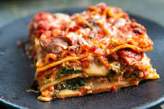

Lasagna

Description
A vegetable-packed vegan lasagne made with dairy-free white sauce. It freezes brilliantly and makes the perfect vegan comfort food.
Each serving provides 470 kcal, 16g protein, 61g carbohydrate (of which 15g sugars), 16g fat (of which 2g saturates), 8g fibre and 0.4g salt.
Ingredients
- 4 tbsp extra virgin olive oil
- 1 large onion, finely chopped
- 1 small aubergine, cut into roughly 1.5cm/⅝in dice
- 1 medium courgette, cut into roughly 1.5cm/⅝in dice
- 1 red pepper, seeds removed, cut into roughly 1.5cm/⅝in dice
- 250g/9oz small chestnut mushrooms, thinly sliced
For the white sauce
- 3 tbsp sunflower oil
- 100g/3½oz plain flour
- 800ml/1¼ pint unsweetened almond milk
Steps
- Preheat the oven to 200C/180C Fan/Gas 6.
- Heat the olive oil in a large, non-stick saucepan and fry the onion for 3–4 minutes, or until softened and lightly browned, stirring. Add the aubergine, courgette, pepper and mushrooms and fry for 12 minutes, stirring regularly.
- Add the garlic and cook for a few seconds more, then stir in the red lentils, tomatoes, Italian seasoning, sugar and crumbled stock cube.